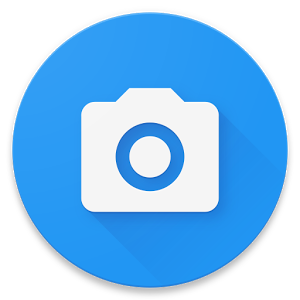

<link rel="import" href="../../bower_components/polymer/polymer.html">

<dom-module id="camera-recording">
	<template>
		<style type="text/css">
			:host {
				display: flex;
				width: 100%;
			}

			:host .camera-wrapper {
				flex-grow: 1;
				position: relative;
				padding: 10px;
				display: flex;
				justify-content: center;
			}

			:host button {
				display:block;
				border-radius: 50%;
			    border: 0px;
			    margin: 0px;
			    padding: 0px;
			    position: relative;
			    height: 80px;
			    width: 80px;
			}

			:host button:hover {
				cursor: pointer;
			}

			:host button img {
				height: 80px;
				width: 80px;
			}

			:host .camera-wrapper:not([selected]) {
				display: none;
			}


		</style>
		<div id="open-camera" class="camera-wrapper" selected>
			<button id="open" class="open-camera" on-tap="_checkForInputDevice"></button>
		</div>
		<div id="camera-recorder" class="camera-wrapper">
			<video id="camera" class="video-elem" width="640" height="480"></video>
			<button id="snap" on-tap="_onTakePhoto" class="take-photo">
				
			</button>
		</div>
		<div id="camera-preview" class="camera-wrapper">
			<canvas id="preview" class="preview-elem" width="640" height="480"></canvas>
			<button on-tap="sendMessage" class="send-btn">
				
			</button>
		</div>
	</template>

	<script>
	(function() {
		'use strict';

		Polymer({
			is: 'camera-recording',
		  	properties: {
		  		currentState: {
		  			type: String,
		  			value: 'open-camera'
		  		}
		  	},
	  		_changeState: function(newState){
	  			var newElem = Polymer.dom(this.root).querySelector('#' + newState),
	  				oldElem = Polymer.dom(this.root).querySelector('.camera-wrapper[selected]'),
	  				selectedAttr = 'selected';

	  			if(newState !== this.currentState){
	  				oldElem.removeAttribute(selectedAttr);
	  				newElem.setAttribute(selectedAttr, '');

	  				this.currentState = newState;
	  			}
		  	},
			_checkForInputDevice: function(e) {
				navigator.getUserMedia({video: true}, this._startRecording.bind(this), function(e) {
					console.log('error getting camera');
				});
			},
			_startRecording: function(stream){
				this._changeState('camera-recorder');
				this.$.camera.src = window.webkitURL.createObjectURL(stream);
        		this.$.camera.play();
			},
			_onTakePhoto: function(){
				this._changeState('camera-preview');
				var context = this.$.preview.getContext('2d');
				context.drawImage(this.$.camera, 0, 0, 640, 480);
			},
			sendMessage: function(){
		  		var msgObj = {};

		  		msgObj.user = socket.username;
				msgObj.content = this.$.preview.toDataURL("image/png");
				msgObj.timestamp = Utils.getTimestamp();
				msgObj.type = 'P';

				socket.emit('message', msgObj);

				this._changeState('camera-recorder');
			}
		});
	})();
	</script>

</dom-module>
